1~3. 실제 예시로 알아보는 공정 동특성 모델링 도구
(앞에 1~3은 포스팅 3개를 합친거라 의미는 없다..)
다음의 화학물질 혼합 공정을 살펴보자. 두 개의 공정 흐름이 혼합되어 흐름 3이 되고 가열기에 유입되어 가열 후 반응기에 공급된다. 공정은 정상상태이다. 흐름 1의 농도는 1g/L이고 흐름 2의 농도는 4g/L이다. 이 공정은 잘 운영되고 있다가 오후 3시에 작업조가 바뀌면서 문제가 발생했다. 새 운전자가 공정의 유량계를 잘못읽고 흐름 1의 유량을 20으로, 흐름 2의 유량을 10으로 하였다. 3시 30분에 교대조가 급히 와서 문제를 파악하였다. 이때, 30분간 가열기의 출구농도 Ca는 어떻게 되었을까?
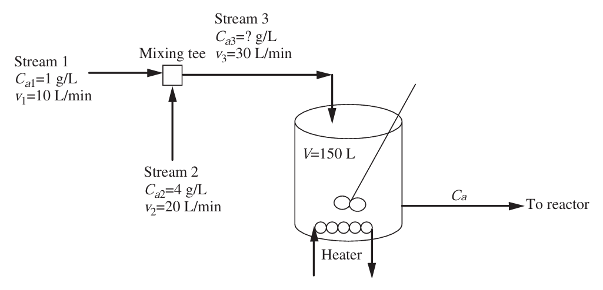
먼저 문제는 혼합기에서 발생하므로, 혼합기의 물질 수지를 세워보면 다음과 같다. 먼저 문제가 발생하기 전은 다음과 같다.
흐름 1에서 유입되는 A의 유량 + 흐름 2에서 유입되는 A의 유량= 흐름 3의 A의 유량
1g/L * 10L/min + 4g/L * 20L/min = x g/L * 30L/min , 흐름 3의 농도 x = 3g/L
이제 문제가 발생한 후 농도는
흐름 1에서 유입되는 A의 유량 + 흐름 2에서 유입되는 A의 유량= 흐름 3의 A의 유량
1g/L * 20L/min + 4g/L * 10L/min = x g/L * 30L/min , 흐름 3의 농도 x = 2g/L
따라서 반응기로 유입되는 농도가 3에서 2로 줄어드는 결과가 발생했다. 이것이 반응기에서 유출되는 농도 Ca에 어떤 영향을 미칠 것인가? 일단 엄청난 시간이 흐른다면 당연히 유입 농도가 2이므로 유출 농도도 2가 될 것이다. 즉 유출농도가 3에서 2로 점차 감소하는 결과가 나타날 것이다. 이를 수식적으로 표현해보자. 먼저 가열기에서 물질수지를 세우면 다음과 같다.
가열기에 유입되는 A유량 - 유출되는 A유량 = 가열기에 축적되는 A의 양
v3 * Ca3 - v3 * Ca = d(VCa)/dt
양변을 v3로 나눠주면 다음과 같은 결과를 얻는다.
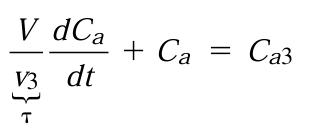
이것은 유입농도의 변화에 따른 가열기의 유출 농도변화에 관한 미분방정식이다. 여기서 미분항의 계수인 V/v3는 바로 체류시간으로, 이 공정에서는 5분이다. (150/30) 따라서 식은 다음과 같이 바뀐다.
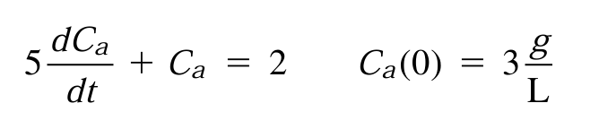
이것을 이제 적분하여 풀어보자.
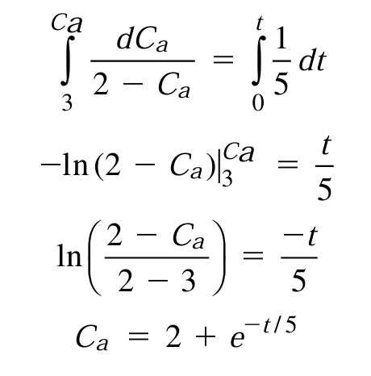
출구농도 Ca를 시간에 따른 함수로 표현하는데 성공하였다. 이를 그래프로 도시하면 다음과 같다.
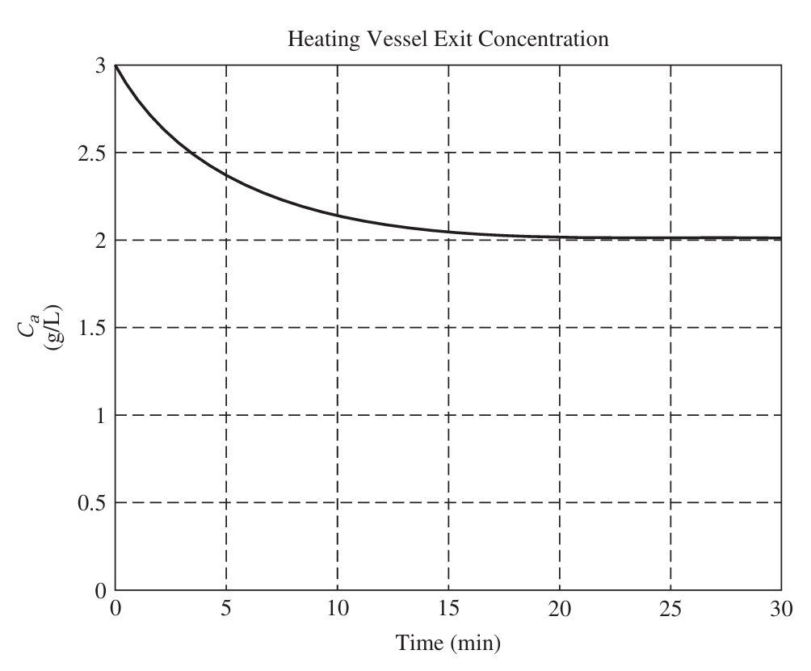
여기서 알 수 있다시피, 30분이 지난 시점에는 이미 농도가 2g/L에 가까워졌다.
이제 이 공정의 에너지 수지식도 생각해보자. 온도 정보를 추가로 알아내면 다음과 같았다.
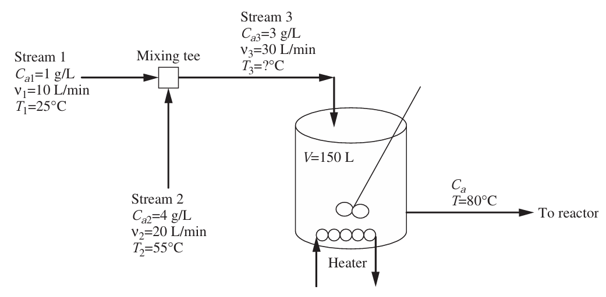
일단 먼저 외란의 영향을 고려하기 전 상황을 살펴보자. 이때는 정상상태로, 에너지 수지를 세우면 다음과 같다.
흐름1의 엔탈피 + 흐름2의 엔탈피 = 흐름3의 엔탈피
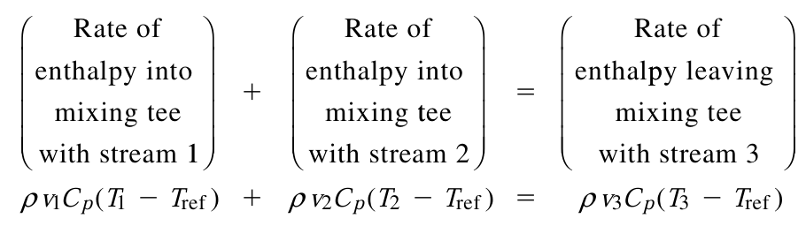
Q=H=Cpm△T를 이용하여 식을 나타낸 것이다. 이때 액체에서 밀도는 잘 변하지 않고, 비열도 항상 똑같다고 가정해본다. 또 기준 온도(엔탈피가 0인 점)을 ref로 삼았다. 그러면 에너지 수지식은 다음과 같아진다.
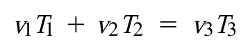
이제 T3에 대해서 풀면
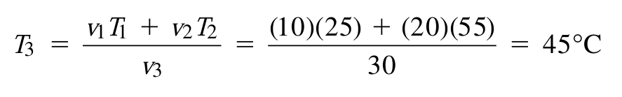
즉 정상상태일 때, 가열기에 들어가는 입력의 온도는 45도이다. 이제 가열기에 정상상태 에너지수지를 사용하여 가열기에 공급되는 열 Q도 알아낼 수 있다.
흐름3(유입) 엔탈피 + 공급된 열 = 유출의 엔탈피
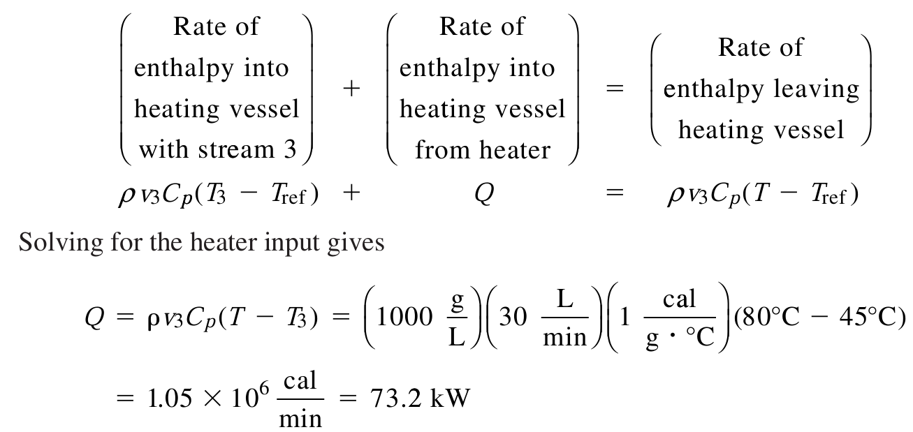
이제 오후 3시에 외란이 발생한 후 입력되는 새로운 온도 T3를 구해보자.
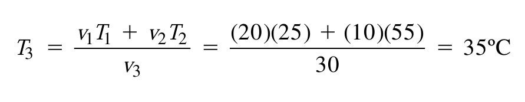
외란이 발생하자마자 가열기에는 곧바로 35도의 액체가 유입되기 시작한다. 이 경우에 가열기의 에너지 수지식을 세워보면
유입-유출+열=축적량
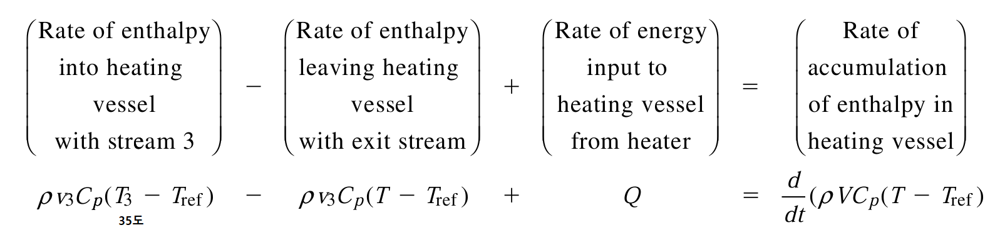
이를 간단히 하겠다. Tref를 지우고 밀도와 비열,v3항을 나눠주면
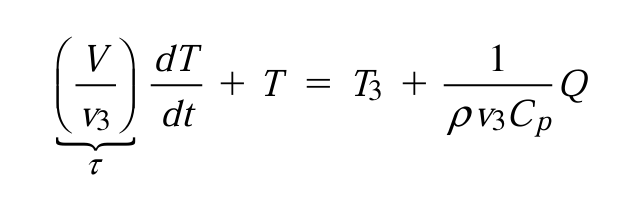
이제 값을 대입해보자.
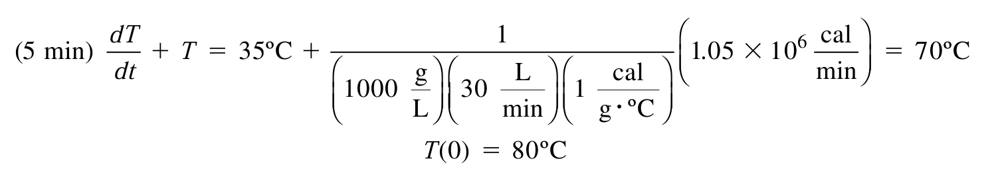
이를 변수분리하여 적분하면
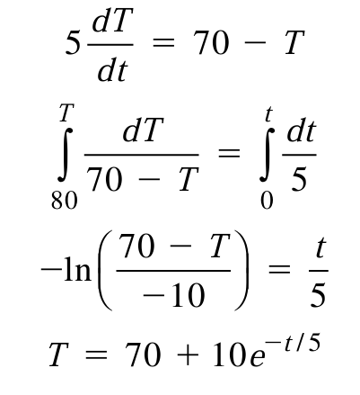
즉 온도의 변화또한 시간에 따라 나타낼 수 있었다. 이를 그래프로 나타내면 다음과 같다.
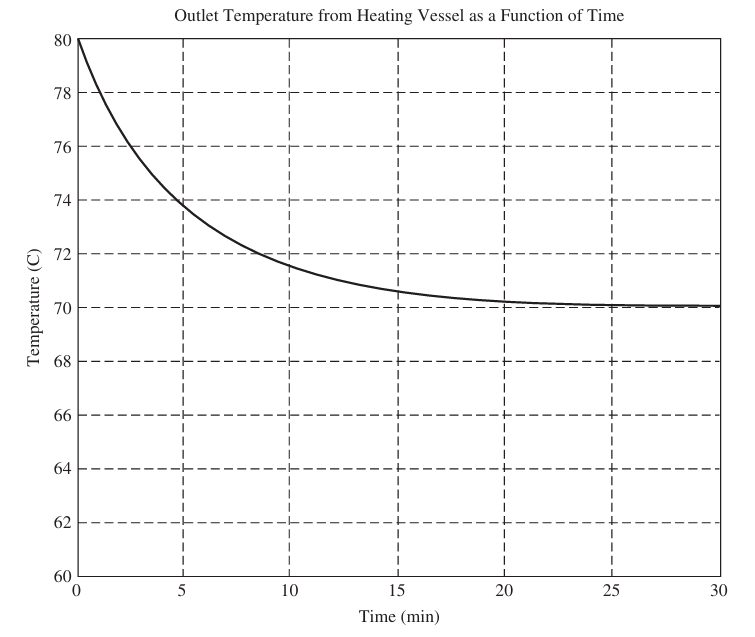
30분이 지난 후에는 온도가 초기 80도에서 70도에 가깝게 떨어짐을 알 수 있다.
이처럼 물질 수지와 에너지 수지를 도입하여 시스템이 운전조건의 변화에 어떻게 응답하는 지 예측할 수 있다. 공정을 모델링하는 능력은 공정변수를 원하는 설정점에 자동적으로 맞추는 제어기를 설계하기 위한 초석이 된다.
*모델링을 위한 수학적인 도구들
위 예제에서 보았다시피 공정의 농도와 온도가 시간에 따라 변하는 것을 살펴보는 과정에서 비정상상태의 물질수지와 에너지수지의 미분방정식을 풀어야 한다. 위에서는 변수분리법과 적분으로 풀었지만, 다른 경우에는 라플라스 변환과 소프트웨어를 이용해야 할 수도 있다. 따라서 여기서 추가적으로 라플라스 변환을 배우고 넘어가도록 한다.
라플라스 변환은 다음과 같이 정의된다.
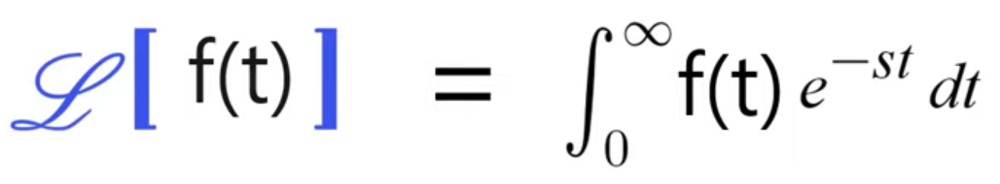
주요함수를 변환하여 정리해둔 표는 다음과 같다.
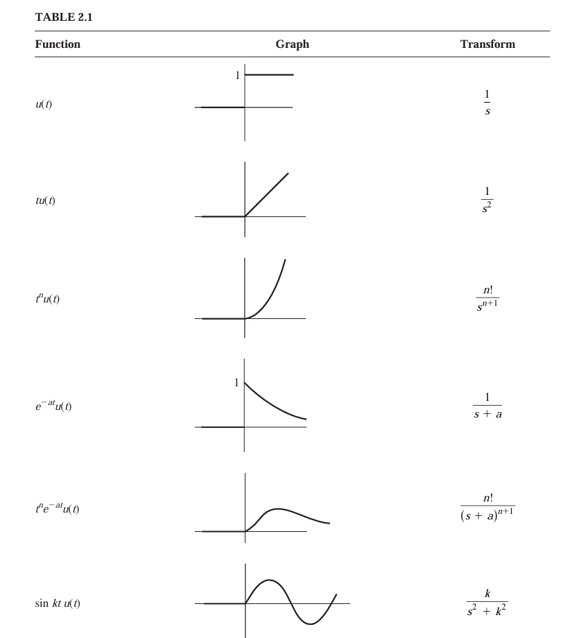 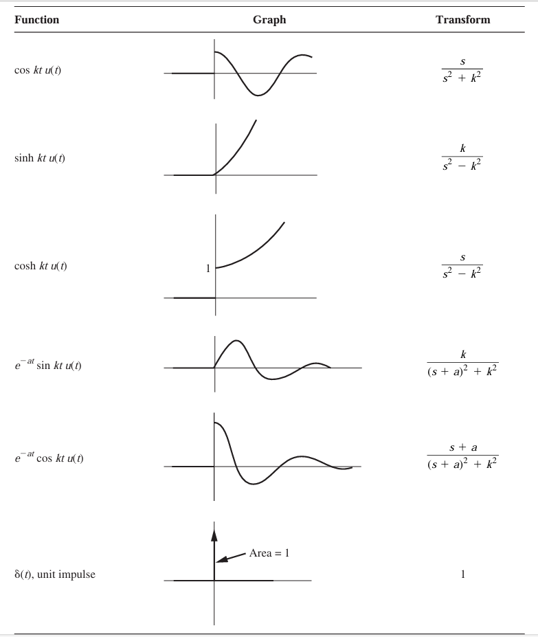
자세한 내용은
https://audio268.tistory.com/111?category=788373
2. 전달함수와 라플라스변환
앞서 공부했었던 화학공정의 모델링을 살펴보면, 모델링의 대부분이 미분방정식으로 표현됨을 알 수 있었다. 이 미방을 풀기 위해 쓰는 방법이 라플라스 변환이다. 라플라스 변환을 쓰기전에
audio268.tistory.com
를 참조하여라.
예를 들어 다음 식을 만족하는 x(t)를 라플라스 변환해보자.
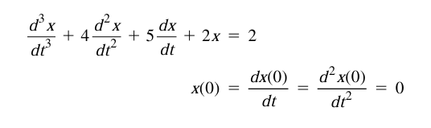 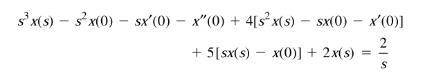
라플라스 변환하면 위와 같고, 초기조건을 대입하면 다음 식이 나온다.
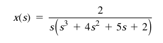
이제 이것을 역변환하여 실제 x(t)를 구할 것이다. 먼저 다음과 같이 부분분수 분해해보자.
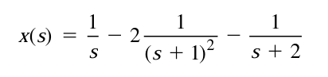
이제 표에서 역변환을 할 수 있다.
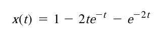
요약: 여기서는 선형 상미분 방정식을 풀이하기 위하여 라플라스변환을 알아보았다. 그 절차는 다음과 같다.
1.방정식의 양 변을 라플라스변환한다. 이때 도함수의 변환에서 초기 조건이 관계된다.
2.미지수에 관한 라플라스 변환식을 대수학적으로 푼다.
3.이를 역변환한다.
이러한 기법을 이용하여 공정모델링 과정에서 나타나는 미분방정식을 풀 수 있다. 화학물질 혼합기에서 외란이 발생했을 때, 농도와 온도 변화를 분석해보았다.